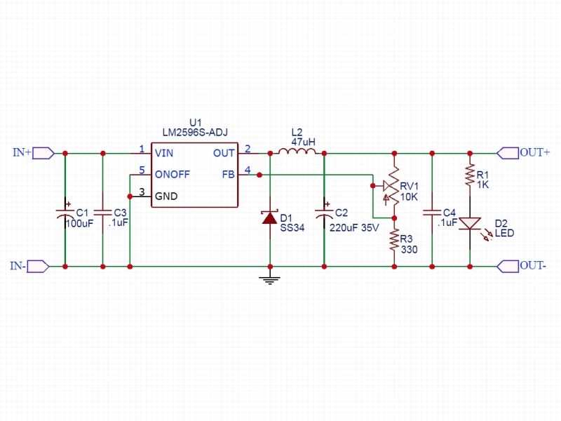

Mes réalisations¶
- Auteur
J.Soranzo
- Date de création
02/2022
- Date dernière maj
13/03/2022
- Societe
VoRoBoTics
- Entity
VoLAB
Contents
Réalisés/terminés¶
De la gauche vers la droite : module tension/courant, USB 5V 3A, Oscillo, Alimentation stabilisé, re USB 5V 33A
Manque sur la photo : Voltmètre/ampèremètre, triple tinyVoltmètre
Règles de nommage¶
Ci-dessous les règles que j’ai utilisé pour nommer les objects dans Freecad
nom du fichier = nom de l’objet (de préférence sa vrai référence)
chaque objet à un part dans FreeCad
chaque part à SA spreadsheet cela permet d’avoir plusieurs fois le même terme (ex: long, larg)
spreadsheet = nomDeLObjetSp (permet d’identifier les spreadsheet parmi d’autres noms)
un diamètre = diam
une longueur = long
une largeur = larg
une hauteur = haut
une épaisseur = ep
un entraxe = entraxe
une distance entre 2 points = dist
on ne répète pas le nom de l’objet dans les éléments de la spreadsheet
On suffixe en commençant par le plus générique
posX et posY font référence à la manière dont le scketch s’affiche de base X axe des abscisses Y celui des ordonnées (indépendant du repère XYZ de l’espace 3D de FreeCAD)
exemples:
bornSp.bornierVisTrouDiam est incorrecte, alors que bornierSp.VisTrouDiam serait correcte
suffixe : VisTrouDiam, VisTrouPosX….
Versionning¶
Pas de git pour ce projet ! les versions soit 3 digits soit 3 digits. 1 sous version. Je suis indécis. J’aurais tendance à tendre vers 3 digits seuls (ça fait moins de caractères à taper)
Passage sous git le 17/04/22 : on perd la notion de version numérotée. On peut s’en sortir avec le hash du commit mais ce passage sous git va de paire avec le passage à des références dans freecad pour ne pas avoir de nom de référence qui change tout le temps… Mais on perd aussi en facilité en effet avec le versionnning fait sur le nom du fichier on travaille sans changer d’outil…
Génération des nomenclatures csv pour Restructured text¶
Outil : Libre office calc (c’est un des rare qui permette de chaisir l’encodage et le séparateur)
Faire : Fichier / Enregistrer une copie sous…
Choisir UTF-8 et , comme séparateur
Le model de base 35mm large¶
Modèle¶
J’ai entièrement repris le modèle de base sous Freecad avec spreadsheet paramétrable.
Face avant détachable & ventilation. Fortement inspiré du model de Cordless
Ajout également d’une vis pointeau et d’un insert fileté pour bien tenir les XT60


Calculs relatifs à la ventilation¶
Calculer le nombre de fentes.
On connaît:
la largeur du modules
l’épaisseur de la parois
la largeur des fentes
l’écart entre les fentes
On veut le nombre de fentes et la longeur de la répétission
En effet dans Freecad, il faut ces 2 paramètres:
grandA =(largeurModuleBase - 2 * epaisseurParois) / 2
ventilLargeurRepet =grandA - ventilEcartfente / 2 - (ventilLargeurFentes + ventilEcartfente)
ventilNbrFents =ceil(ventilLargeurRepet / (ventilLargeurFentes + ventilEcartfente)) + 1

Profile¶


Côtes XT60 mauvaise :
largeur = 8
largeur du sommet = 3
Juste :
hauteur = 15.75 mais affaissement des couche d’impression à compenser
le 13.25


Switch ON/OFF¶
J’ai eu la chance de récupérer un carton entier de ces switch donc, je les utilise. Libre à vous de changer.
Toujours est-il que voici la référence pour les flemmards : chez Farnell C1500ATAAA 2
Fabrcant ARCOLECTRIC (BULGIN LIMITED).
Cette version est assez encombrante 14x30mm. Mais c’est celle que je choisi de base car j’en ai 2 cartons pleins :-()
Autre version plus petite 15x10 malheureusement ceux que j’ai commander sur amazon devaient mesurer 20x10 et à l’arrivée ils sont plus petits mais du coup ça peut être utile.

Nomenclature de base¶
Désignation |
Fab |
Ref fab |
Qté |
Pu |
Pt |
|---|---|---|---|---|---|
Insert Fileté M3 |
RUTHEX |
sans |
4 |
0,10 € |
0,40 € |
Switch |
ARCOLECTRIC |
C1500AT |
1 |
2,70 € |
2,70 € |
VIS THC M3x6 |
BRICOVIS |
TC HC M3x6ANEF |
2 |
0,06 € |
0,12 € |
VIS STHC M3x10 |
BRICOVIS |
STHC Pointeau M3X10ANEF |
2 |
0,08 € |
0,17 € |
XT60 MALE |
AMAZON |
1 |
0,60 € |
0,60 € |
|
XT60 FEM |
AMAZON |
1 |
0,60 € |
0,60 € |
|
Tige Laiton diam 2mm |
AMAZON |
2*18,62mm |
2 |
0,052 |
0,10 € |
TOTAL |
4,69 € |
Alimentation des modules en plus base tension¶
Pour les modules qui en ont besoin !
Module convertisseur réglable 2A¶
Ce convertisseur est nécessaire quand les éléments du module ne supportent pas des tension d’entrées comprise entre 15 et 24V.
Il convient alors de régler la tension de sortie du convertisseur à la bonne valeur
Convertisseur DC/DC 1A réglable
Alimentation du rail : 19 à 25V environ
Courant de sortie nominal annoncé : 2A
Ce style de DCDC:

13.57€ par 10pcs chez Banggood lm2596 DC-DC 4
Warning
Pb avec le model 3D récup sur GARCAD
Écart entre trou mesuré : 31mm versus 30.26 sur le step

Uin : 35V max
Uout : de 1.35V à 35V mouais !
pb la fixation: 2 trous M3 mais:
Warning
ATTENTION Mettre des vis nylon : risque de contact avec un broche de capa

Tige laiton (connexion des XT60)¶
Tige en laiton diam 2 pour les rails chez Leroymerlin diam 3 (le mieux serait du 2)
ou manomano tous les diamètre ou chez AMAZON 20 Pièces T2 Baguettes de Soudage en laiton de 2mm x 250mm 6

Position des tiges en laiton¶
20 tiges de 250mm 14€ soit 0.7€ les 250mm
Module primaire¶
AC/DC adaptateur :

prise pc DELL, diamètre extérieur mesuré: 7.4mm
prise MSI : diamètre extérieur 7.4mm, même adaptateur pour les TS-100 que pour DELL
- prise alim Toshiba ADP-75SB BB
diamètre extérieur 5.5
diamètre tige intérieur : 2.7mm voir 2.8difficile à mesurer
Embase verte du LAB à vis 8 conviennent, l’âme 2mm environ chez AMAZON5.5x2.1 DC5520
Prise male pour le TS100 : l’âme centrale semble plus grosse ci bien que la prise TOSHIBA avec lame de ressort convient mais pas les verte du LAB. Serait : Port DC5525 5.5x2.5. Chez AMAZON DC5525 9
N’ayant pas trouvé simplement d’embase 7.4x5.0mm j’opte pour un adaptateur vers 5.5x5.2 encore du AMAZON Kafuty 5PCS 7.4 x 5.0 x 0.6MM Connecteur d’adaptateur d’alimentation 7
Donc en résumé pour ce module : 1 XT-60 normal + à l’arrière ou du même côté que le XT ou les 2:
Module mesure Tension/courant de la ligne¶


Le but de ce module est d’indiquer la tension et le courant consommé par les modules qui se trouvent après lui dans la chaîne. C’est le seul module qui n’est pas en parallèle.
Outillage pour souder les XT60¶
Voici un outillage permettant de souder les tiges laiton aux XT60 au bonnes dimensions.
Il suffit de régler la partie de droite à la largeur du module considéré.
Il y est équipé d’un réglet disponible chez Castorama
Largeur : 24mm +/-1 et moins de 1mm d’épaisseur
Capot de Prise XT60¶
Afin d’améliorer la prise en main des XT60 connecté à l’extrémité de câbles, il s’agit de créer un boîtier pour les connecteurs XT60 mâle et femelle.

Ma vision¶
Vis pointeau pour tenir fermement dans son logement, le connecteur.
J’ai utilisé Freecad v0.20 afin d’exploiter la nouvelle fonctionnalité de configuration.
Les explications sont fournies sur le wiki Freecad Configurations tables 12
Rendus Freecad 2.0¶
XT60 covert mâle |
XT60 covert femelle |
|---|---|
Nomenclature XT60 coverts¶
Désignation |
Fab/fournisseur |
Ref fab |
Qté |
Pu |
Pt |
|---|---|---|---|---|---|
Insert Fileté M3 |
RUTHEX |
sur AMAZON |
2 |
0,10 € |
0,20 € |
VIS pointeau HC M3x6 |
BRICOVIS |
TC HC M3x6ANEF |
2 |
0,06 € |
0,12 € |
TOTAL |
0,32 € |
USB 5V 3A : ECHEC les modules ne tiennent pas 24V en entrée¶
Convertisseurs: ANGEEK Lot de 5 modules d’alimentation USB DC 6-24 V à 5 V 3 A 14 chez AMAZON 10€/5

Warning
24V max en entrée !!!!

Nomenclature¶
Désignation |
Fab |
Ref fab |
Qté |
Pu |
Pt |
|---|---|---|---|---|---|
Insert Fileteté M3 |
RUTHEX |
sans |
4 |
0,10 € |
0,40 € |
Switch |
ARCOLECTRIC |
C1500AT |
1 |
2,70 € |
2,70 € |
VIS THC M3x6 |
BRICOVIS |
TC HC M3x6ANEF |
2 |
0,06 € |
0,12 € |
VIS STHC M3x10 |
BRICOVIS |
STHC Pointeau M3X10ANEF |
2 |
0,08 € |
0,17 € |
XT60 MALE |
AMAZON |
1 |
0,60 € |
0,60 € |
|
XT60 FEM |
AMAZON |
1 |
0,60 € |
0,60 € |
|
CONV DCDC USB5V 3A |
AMAZON |
ANGEEK |
2 |
2,00 € |
4,00 € |
Tige Laiton diam 2mm |
AMAZON |
2*18,62mm |
2 |
0,052 |
0,10 € |
TOTAL |
8,69 € |
Module oscillo 1 voies DSO138¶
Warning
REGLER LA TENSION DE SORTIE DU DCDC à 9V sinon ça chauffe
ici 9V

Sur AMAZON ARCELI Oscilloscope numérique au Format de Poche, kit Open Source TFT 2,4 Pouces avec sonde, Version assemblée (soudé) 16 à 27€
Attention plusieurs versions différentes même sur le site JYE Tech
NOUVEAU JYETech® 13805K DSO138 Mini Oscilloscope Numérique 200KHz 15 chez BANGGOOD (vue assemblée)

Dimension: 85mm X 75mm X 15mm
La version la plus stable serait la JYE Tech DSO138mini 17 plus compact et aussi plus cher. Pas trouvé assemblée sur AMAZON
BNC : code RS : 680-7371, modèle directement récupérer et mis en fichier Freecad.

Warning
REGLER LA TENSION DE SORTIE DU DCDC à 9V sinon ça chauffe
Nomenclature oscillo DSO138¶
Désignation |
Fab |
Ref fab |
Qté |
Pu |
Pt |
|---|---|---|---|---|---|
Insert Fileteté M3 |
RUTHEX |
sans |
6 |
0,10 € |
0,60 € |
Switch |
ARCOLECTRIC |
C1500AT |
1 |
2,70 € |
2,7 |
VIS THC M3x6 |
BRICOVIS |
TC HC M3x6ANEF |
2 |
0,06 € |
0,12 € |
VIS STHC M3x10 |
BRICOVIS |
STHC Pointeau M3X10ANEF |
2 |
0,08 € |
0,17 € |
XT60 MALE |
AMAZON |
1 |
0,60 € |
0,60 € |
|
XT60 FEM |
AMAZON |
1 |
0,60 € |
0,60 € |
|
OSCILO |
AMAZON |
DSO138 |
1 |
27,00 € |
27,00 € |
Tige Laiton diam 2mm |
AMAZON |
2*133,62 |
2 |
0,70 € |
1,40 € |
VIS THC M3x6 Nylon |
AMAZON |
TC HC M3x6ANYL |
2 |
0,21 € |
0,42 € |
TOTAL |
33,61 € |
Alimentation stabilisé DPS3005¶
DPS3005¶
Éléments mécaniques¶
Sur AMAZON DollaTek DPS3005 19 mais aussi sur ebay DP20V2A 30V5A 50V5A DC32V/3A DPS3003 Programmable Step-down Power Supply Module 18
et aliexpress


Software¶
Ce module peut être piloter en USB, il est fourni avec un carte d’interface.
TheHWcave Controlling a DPS5005 power supply module 20
Avec exemple de code en Python sous github DPS5005-control 21


Connecteurs Audio¶
Utilisation de connecteurs audio pour avoir des connections rapides.
Connecteurs audio¶
Disponibles un peu partout sur internet mais ceux que j’ai utilisés pour la modélisation proviennent d’Amazon Bornier 2 Voies pour Enceinte Haut Parleur 22

Nomenclature module DPS3005¶
Désignation |
Fab |
Ref fab |
Qté |
Pu |
Pt |
|---|---|---|---|---|---|
Insert Fileteté M3 |
RUTHEX |
sans |
4 |
0,10 € |
0,40 € |
VIS THC M3x6 |
BRICOVIS |
TC HC M3x6ANEF |
2 |
0,06 € |
0,12 € |
VIS STHC M3x10 |
BRICOVIS |
STHC Pointeau M3X10ANEF |
2 |
0,08 € |
0,17 € |
XT60 MALE |
AMAZON |
1 |
0,60 € |
0,60 € |
|
XT60 FEM |
AMAZON |
1 |
0,60 € |
0,60 € |
|
DPS3005 |
AMAZON |
DOLLATEK |
1 |
45,00 € |
45,00 € |
Tige Laiton diam 2mm |
AMAZON |
2*98,62mm |
2 |
0,7 |
1,40 € |
Douille banane rouge diam 4mm |
CONRAD |
2535904 |
1 |
0,7 |
0,70 € |
Douille banane noire diam 4 |
CONRAD |
2535899 |
1 |
0,7 |
0,70 € |
Connecteur audio |
AMAZON |
1 |
1,8 |
1,80 € |
|
TOTAL |
48,29 € |
Voltmètre /ampèremètre¶

Volt ampère schéma de câblage initial¶
How to Make a Digital Voltmeter and Ampere Meter at Home - Homemade Myltimeter 23 On Youtube

Câblage interne et utilisation¶

Gene de signal¶
Préliminaire¶
Générateur de Signal XR2206 1Hz -1MHz 24
XR2206 : datasheet
Sur Instructable DIY Function/Waveform Generator 25
Base AD9833 datasheet

Maquettage¶
L’instructable à base d’ARDUINO NANO et d’AD9833 me parait bien.
Appro breakout board 9833 ok
Ampli OP dans le design original : TL071
Maquetter avec un OPA284 ou 184 ou 484 ceux dispo au lab. Single supply jusqu’à 36V ;-)
Si non un dc/dc +15/-15V, sur AMAZON:
Niiyen Module élévateur, convertisseur élévateur CC 3.3 V-13 V à + 15 V/-15 V, convertisseur élévateur 26
un potar de gain et un d’offset, on pourait ajouter une relecture sur l’écran pour controler.
Ajouter l’interrupteur ofset au GND comme sur le design original.
Reverse du code¶
une fonction debounce bof.
un handler d’it qui fait beaucoup
Un switch case pour gérer les menu.
Modélisation 3D¶
3D écran
3D nano (pas utile puisque pcb dédié) si en fait pour les volumes en attendant le pcb
3D boutons
KICAD project started.
Module Parkside¶
Recherche de model internet : pas grand chose d’exploitable, surtout des stl !
Mieux vaut tout re-modéliser ça n’a pas l’air très compliqué si on s’inspire du chargeur !
Module triple tiny voltmètre¶
2.4 to 30V 0.28” chez Banggood Aliexpress ou
AMAZON YIXISI 4pcs Mini Voltmètre Numérique, 0.28 Pouce Deux Lignes DC Voltmètre, 4 Couleurs Rouge/Jaune/Vert/Bleu 27


Module ventilo¶
Diamètre ventilateur 8cm, souhait : inclinable avec éclairage à LED et filtre
Conception du système d’inclinaison¶
Conception du système d’inclinaison, les différentes versions :
avec demi bille et lame de ressort imprimée : KO trop peu précis
avec aimant : presque mais… aimants difficiles à manipuler et pas assez puissants
languette et poignée sur le côté : prometteuse (retenue pour le moment)
languette et bille imprimée |
Version avec aimants |
|---|---|
|
|


{kind=link}
{kind=link}
{kind=link}
{kind=link}
{kind=link}
{kind=link}
{kind=link}
{kind=link}
{kind=link}
{kind=link}
Pilotage éléectrique du ventilo et des LED¶
{kind=link}
Potentiomètre Rotatif avec Interrupteur chez AMAZON 28
Abandon de l’idée du potar avec inter car l’inter n’est pas cliquable mais s’active en bout de rotation si bine que cela ne permet pas de concerner le réglage. Donc retour à une version avec switch séparé cela tombien j’en ai des petit 10x5.
Un simple potentiomètre seul ne convient pas car la tension d’entrée peut varier de 12 à 24V.
On est obligé de passer par un régulateur et comme on veut que cela soit variable, il convient de limiter le module LM2596S à 12V max en sortie et de déporter le potar
datasheet du LM2596S qui équipe les modules choisi
voir ici


Pour du 12v avec R1 1k on a:
1k * ( 12/1.23 - 1 ) = 8.75k
admettons qu’on veuille aller jusqu’à 14V, il faudrait 10.4K pour R2.
D’après l’équation (1) si R1 augmente Vout diminiue mais R1 doit être comprise entre 240 et 1.5k pas 10k comment les modules fonctionnent ?
Une piste:
{kind=link}
Visiblement sur mes modules R1 = 270ohm
vout à 10k = 1.23 * ( 1 + R2/R1) = 1.23 * ( 1 + 10/0.27) = 46V !
vout à 100ohm = 1.23 * ( 1 + 100/270 ) = 1.68V
Pour du 14 en sortie : 0.27 * ( 14 / 1.23 -1 ) = 2.8k max et pas 13805K
Solution une zener 12V en sortie pour écrêter:
R = 24v - 12v / 0.1A environ 120ohm P=1.2W bof ! 5 résistance 1/4W en //
Revoir le courant 20mA par groupe de 4 led 4 groupe 80mA refaire les calculs.
Interrupteurs rpuge miniature¶
Référence KDC1-11 sur AMAZON 29 en noir mais en rouge ???
J’ai commandé des XCD en 21*15mm ici 30
J’ai l’impression qu’il s’agit d’une erreur, sur les autres photo on des KCD1. Un des commentaire avec photo le montre clairement ! Mistère résolu.
Avec un digispark¶
Description sur le site 31 Pas fcaile à trouver !
Pour le PWM et analogRead tout sur une seule page sur le wiki digistump 32
Attiny85 10bits ADC

le 2n700, c’est la première colonne donc 200mA en continu et 500 en pulse.
4 LED en // 80mA et le ventilo donné pour 0.33A mesuré 167mA sous 14V
Transistor en D2PAK NTD20N03L27 20A ou
IPD079N06L datasheet
composants que j’avais sous la main mais un cananl N capable de driver 500mA à 1A suffit !
{kind=link}
Warning
Encore un échec ! le ventilateur siffle quand il est piloté en pwm. Pour les LED c’est OK
Essais d’un ventilo avec pwm : à voir ventilateur commandé sur AMAZON pure wing2 dts
Il n’est pas dit la frequence à laquelle, il faut piloter ce ventilo, on parle sur les doc de carte mère de 15 à 20kHz.
Changer la fréquence du PWM dans le digispark¶
Trying to increase PWM frequency 34 sur le forum Digispak
Un peu plus éloigné : ATTiny85 PWM frequency selection 35
Attention les canaux analogiques ne sont pas numéroté de manière logique.
Voir Digistump basics 32
sensorValue = analogRead(1); //Read P2
//To set to input: pinMode(2, INPUT);
//THIS IS P2, P2 is analog input 1, so when you are using analog read, you refer to it as 1.
//sensorValue = analogRead(2); //Read P4
//To set to input: pinMode(4, INPUT);
//THIS IS P4, P4 is analog input 2, so when you are using analog read, you refer to it as 2.
//sensorValue = analogRead(3); //Read P3
//To set to input: pinMode(3, INPUT);
//THIS IS P3, P3 is analog input 3, so when you are using analog read, you refer to it as 3.
//sensorValue = analogRead(0); //Read P5
//To set to input: pinMode(5, INPUT);
//THIS IS P5, P5 is analog input 0, so when you are using analog read, you refer to it as 0.
{kind=link}
Module ampèremètre¶
High Precision Ammeter - Amber 36 sur PC Board.ca 11.90 $ sans les frais de port
Sur AMAZON : peu de choix : Harilla DC 3.5-30V 5 Digit Digital LED Ampèremètre Ampèremètre Panneau Car - Jaune 37 et 22€ pas en prime !
Tellement fun un ampèremètre continu à aiguille :
Mini-ampèremètre analogique 2.5 Précision Ampèremètre (DC 0-5A) 38 là encore pas énormémet de choix 15.47€
{kind=link}
Version 3A CC 39 10.39€
Weblinks¶
- 1
https://www.amazon.fr/gp/product/B08K1BVGN9/ref=ppx_yo_dt_b_asin_title_o06_s00?ie=UTF8&psc=1
- 2
https://fr.farnell.com/arcolectric/c1500ataaa/interrupteur-a-bascule-spst-noir/dp/150549?st=c1500
- 3
https://www.amazon.fr/gp/product/B07C3R5W31/ref=ppx_yo_dt_b_asin_title_o08_s00?ie=UTF8&th=1
- 4
- 5
- 6
https://www.amazon.fr/gp/product/B08S728MMZ/ref=ppx_yo_dt_b_asin_title_o01_s01?ie=UTF8&psc=1
- 7
https://www.amazon.fr/gp/product/B084Z6YDCV/ref=sw_img_1?smid=A1U9HA371QAC83&psc=1
- 8
- 9
https://www.amazon.fr/gp/product/B01LQGESUO/ref=ox_sc_act_title_2?smid=AQ1IBDB6G2RRD&psc=1
- 10
https://www.amazon.fr/gp/product/B07D4DLJ69/ref=ox_sc_act_title_1?smid=A2HAOQPNQ6T9Y5&psc=1
- 11
- 12
https://wiki.freecad.org/Spreadsheet_Workbench#Configuration_tables
- 13
- 14
https://www.amazon.fr/gp/product/B07Q7TTD6C/ref=ppx_yo_dt_b_asin_title_o00_s01?ie=UTF8&psc=1
- 15
- 16
https://www.amazon.fr/gp/product/B07V67LYXF/ref=ppx_yo_dt_b_asin_title_o01_s00?ie=UTF8&psc=1
- 17
- 18
- 19
https://www.amazon.fr/gp/product/B07PLFZ3H2/ref=ppx_yo_dt_b_asin_title_o09_s01?ie=UTF8&psc=1
- 20
- 21
- 22
https://www.amazon.fr/gp/product/B082TM9QXK/ref=ppx_yo_dt_b_asin_title_o04_s00?ie=UTF8&psc=1
- 23
- 24
- 25
https://www.instructables.com/DIY-FunctionWaveform-Generator/
- 26
https://www.amazon.fr/gp/product/B093PSZPW6/ref=crt_ewc_title_dp_1?ie=UTF8&psc=1&smid=A3MM3V4F4Z0CQN
- 27
- 28
https://www.amazon.fr/gp/product/B096NXK7L1/ref=ox_sc_act_title_1?smid=A2W68NJA5YNXUP&psc=1
- 29
- 30
https://www.amazon.fr/gp/product/B085B21DX1/ref=ppx_yo_dt_b_asin_title_o04_s00?ie=UTF8&psc=1
- 31
- 32(1,2)
- 33
- 34
- 35
https://forum.arduino.cc/t/attiny85-pwm-frequency-selection/60785/5
- 36
- 37
- 38
- 39
- 40